챕터 02 다향성과 추상 타입에는 총 3가지 파트가 있다
1 상속 개요
2 다향성과 상속
3 추상 타입과 유연함
이장에는 객체지향의 유연함을 얻을 수 있도록 해 주는 추상화에 대해 설명하고 있다
상속 개요
상속은 한 타입을 그대로 사용하면서 구현을 추가할 수 있도록 해주는 방법을 제공한다. 예를 들어 금액 할인에 사용되는 쿠폰을 표현하기 위해 Coupon이라는 클래스를 작성했다고하자.
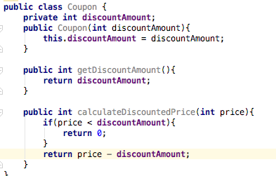이 객체를 이용해서 할인된 금액을 구하는 코드는 다음과 같이 사용할 것
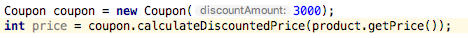만약 금액 할인 쿠폰 중 상품 금액이 지정한 금액 이상인 경우에만 할인을 받도록 하는 쿠폰을 만들고 싶다. 근데 이미 Couponㅋ클래스가 쿠폰의 기본적인 기능을 제공하고 있다 따라서 이 기능을 확장해서 쿠폰을 만들면 좀 더 수월하게 새로운 쿠폰 기능을 만들수 있다 이럴 떄 상속을 많이 이용
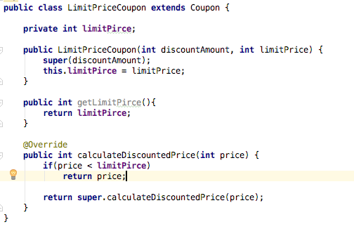LimitPriceCoupon클래스는 Coupon클래스를 상속받고 있다 이때 Coupon클래스를 상위 클래스 또는 부모 클래스라하고 LimitPirceCoupon클래스는 하위 또는 자식클래스라고 한다. 자식 클래스는 부모 클래스에 정의된 구현을 물려받음. 또한 하위 클래스는 필요에 따라 상위클래스에 정의된 메서드를 새롭게 구현할수 있음.
다형성과 상속
다향성은 한 객체가 여러 가지 모습을 갖는다는 것을 의미 여기서 모습이란 타입을 뜻하는데 즉 다향성이란 한 객체가 어러 타입을 가질 수 있다는 것을 뜻한다.
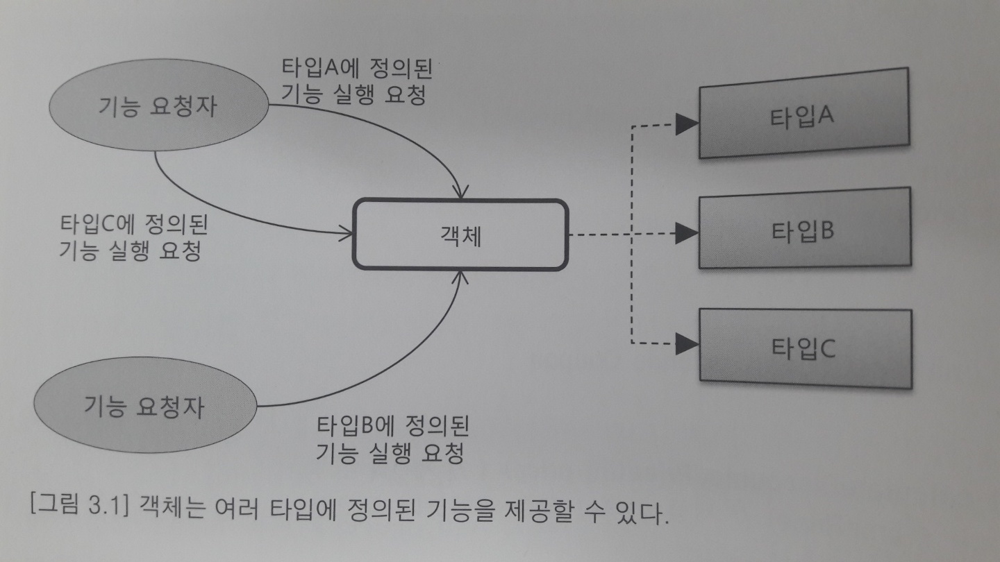위 그림에서 중간에 위치한 객체는 타입A, 타입B, 타입C에 정의된 인터페이스의 구현을 제공하는데 이 경우 다른 코드에서는 이 객체에서 타입A에 정의된 기능 실행을 요청하거나 타입B 또는 타입C의 기능도 요청할수 있다
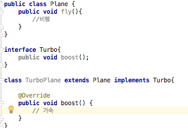위에 그림을 보면 TurboPlane은 Plane을 상속받고 Turbo도 상속받고 있다 이런 경우에 TurboPlane은 Plane이나 Turbo 에 정의된 메서드의 실행을 요청할수 있다 또한 TurboPlane타입의 객체에 할당하는 가능하다 아래 그림을 보자
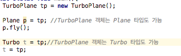즉 TurboPlane타입의 객체는 Plane타입도 되고 Turbo타입도 될수 있으며 Plane 타입과 Turbo타입에 정의된 모든 기능을 제공하게 된다.
인터페이스 상속과 구현 상속
많은 객체 지향언어는 다향성을 구현하기 위해 타입을 상속 받는 방법을 사용하는데 크게
인터페이스 상속과 구현 상속으로 구분해 볼수 있다.
인터페이스 상속은 순전히 타입 정의만 상속 받는 것이다.
구현 상속은 클래스 상속을 통해서 이루어진다. 구현 상속경우 보통 상위 클레스에 정의된 기능을 재사용하기 위한 목적으로 사용
추상 타입과 유연함
추상화는 데이터나 프로세스 등을 의미가 비슷한 개념이나 표현으로 정의하는 과정이다.
간단하게 예를 들어 어떤 프로그램을 만드는데 다음과 같은 세가지 기능이 있다고 가정
1. FTP에서 파일을 다운로드
2. 소켓에서 데이터 읽기
3. DB 테이블의 데이터를 조희
사용 내용을 분석해 보니 위 세 가지 기능은 모두 로그를 수집하기 위한 기능이었다.
각 기능은 로그를 수집하기 위해서 원격 서버에 있는 로그 파일을 FTP를 이용해서 가져오거나
TCP 서버를 이용해서 로그 데이터를 읽어 오거나 DB 테이블에 보관된 로그 데이터를 조회하는 것이었다.
이 세 기능 모두 로그 수집이라는 프로세스를 처리하고 있다. 즉 이 세 기능을 추상화하면 로그 수집이라는 개념으로
정의 할수 있다.
추상화된 타입은 오퍼레이션의 시그니처만 정의할 뿐 실제 구현을 제공하지는 못한다.
메모 단순히 구현클래스로부터 추상 타입을 이끌어 내는 것만이 추상화라고 오해하지 말것 추상화는 광법위 하다.
추상 타입과 실제 구현의 연결
추상 타입과 실제 구현 클래스는 상속을 통해서 연결된다. 즉 구현 클래스가 추상 타입을 상속받는 방법으로 둘을 연결하는 것.
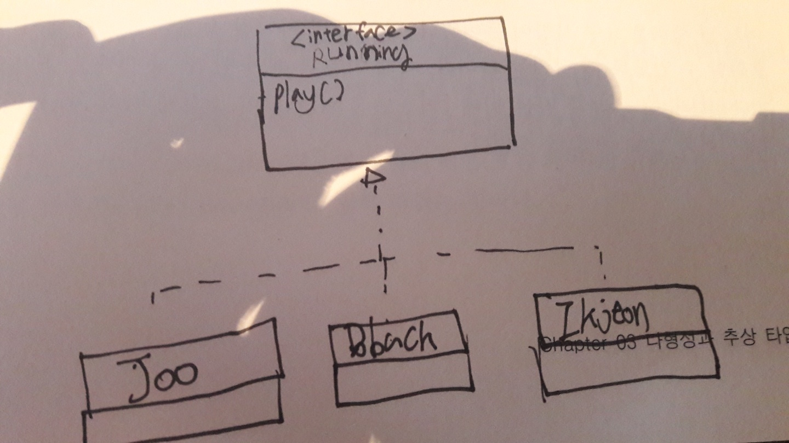예를 들어 위에 그림처럼 연결하면 다음과 같이 사용가능
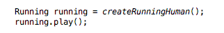다향성에 의해 위에 코드는 실제 객체 타입의 play메서드를 호출할것 이렇게 자식 클래스들은 실제 구현을 제공한다는 의미에서 콘크리트클래스라고 부른다.
추상 타입을 이용한 구현 교체의 유연함
여기서 다음 그림과 같이 콘크리트클래스를 사용해도 문제는 없을거 같은데 왜 추상 타입을 사용할까?
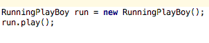물론 처음에는 문제가 되지 않는다. 추상 타입을 사용하는 이유를 위해 다음과 같은 그림의 예지를 사용

여기서 FlowController러는 다음과 같이 비슷 할것이다.
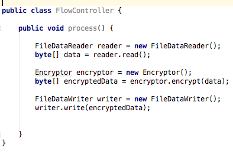어느날 새로운 요구사항이 들어왔다 파일 뿐만 아니라 소켓을 토애서 데이터를 읽어와 암호화 할수 있도록 그럼 아마 코드는 다음과 같이 변할 것이다.
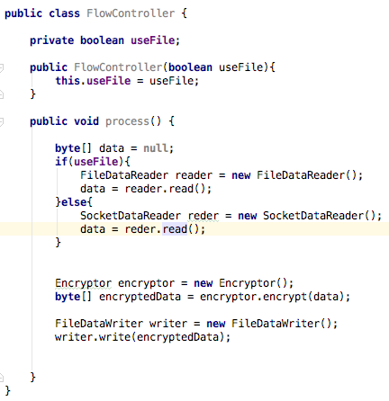이 모양세는 처음에 들어가기에 했던 예제와 비슷해 졌다. 데이터를 읽어오는 요구 사항의 변화가 생길 떄 마다 FlowController는 계속해서 영향을 받는다.FlowController자체는 파일이건 소켓이건 상관없이 데이터를 읽어 오고 이를 암호화해서 특정 파일에 기록하는 책임을 진다. 근데 지금 코드는 본연의 책임(흐름 제어)과 상관없는 데이터 읽기 구현의 변경 떄문에 FlowController도 함깨 바뀌는 것이다.